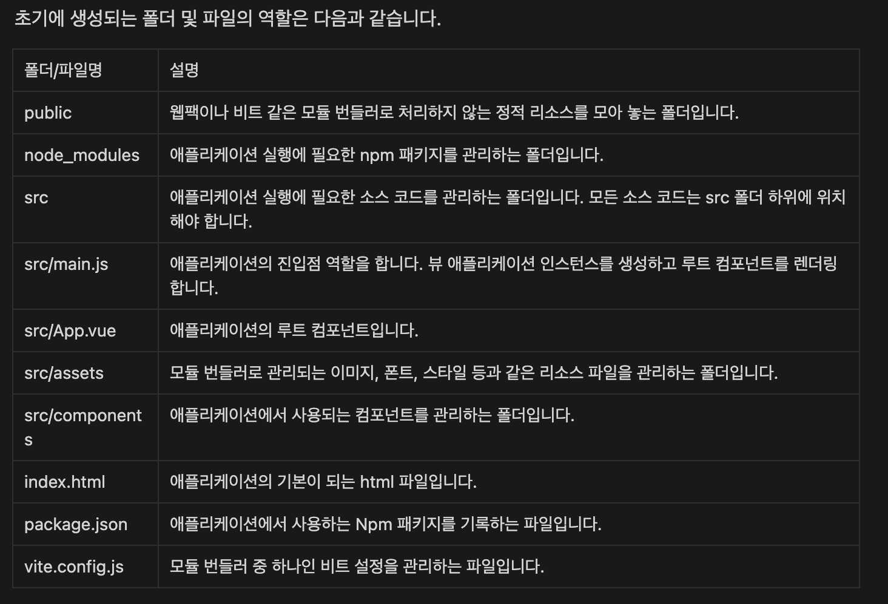

설치가 어려울떈 콘드 샌드박스 이용하기
초기에 생성되는 폴더 및 파일의 역할은 다음과 같습니다.
개발써버는 index.html 로 가고 src의 main.js로 가서 inport export가 된다. app.vue로 간다.
### SFC SFC는 Single File Component의 약자로 하나의 파일에서 컴포넌트를 구성하는 요소(script, template, style)를 모두 작성할 수 있는 파일 형식을 말합니다.
프레임워크와 라이브러리임 프레임 워크 : 이미코드를 짤 방향이 짜여있다. 라이브러리: 내가 직접 뭘할지 직접 가져다 쓰는 것
options API
export default {
data() {
return {};
},
};
그러면 해당 컴포넌트에서 myName이라는 키로 데이터를 사용할 수 있습니다. template 부분을 수정하여 myName 데이터를 직접 사용해봅시다. **template.vue** template 영역에서 data는 {{ }} 문법 사이에 들어갑니다.
안녕하세요? 제 이름은 {{ myName }}입니다.
만나서 정말 반갑습니다. :)
우리가 앞에서 사용한 바인딩 문법을 자세히 살펴봅시다. ### A. 문자열 데이터 바인딩 문자열 데이터 바인딩인 template 영역에서 이중 중괄호를 이용하여 데이터를 바인딩하는 방법을 말합니다.
{{data}}
### B. 원시(raw) 데이터 바인딩 v-html 디렉티브를 이용해서 바인딩 하는 방법을 말합니다.
만나서 정말 반갑습니다. :)
v-html 디렉티브의 장점은 HTML 태그를 바인딩할 수 있다는 점입니다. 만약 문자열 바인딩이였다면 아래처럼 됩니다.
{{ hello }}
만나서 정말 반갑습니다. :)